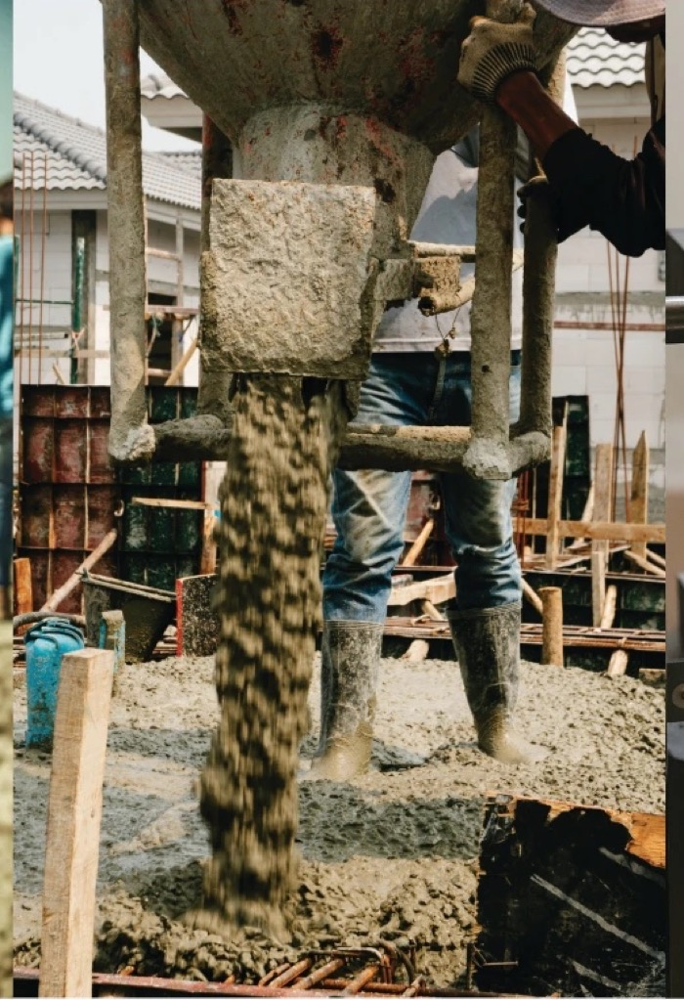
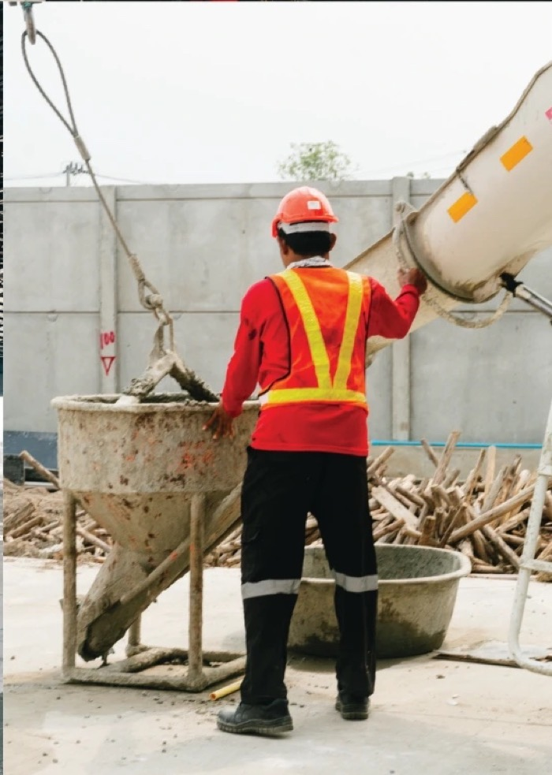
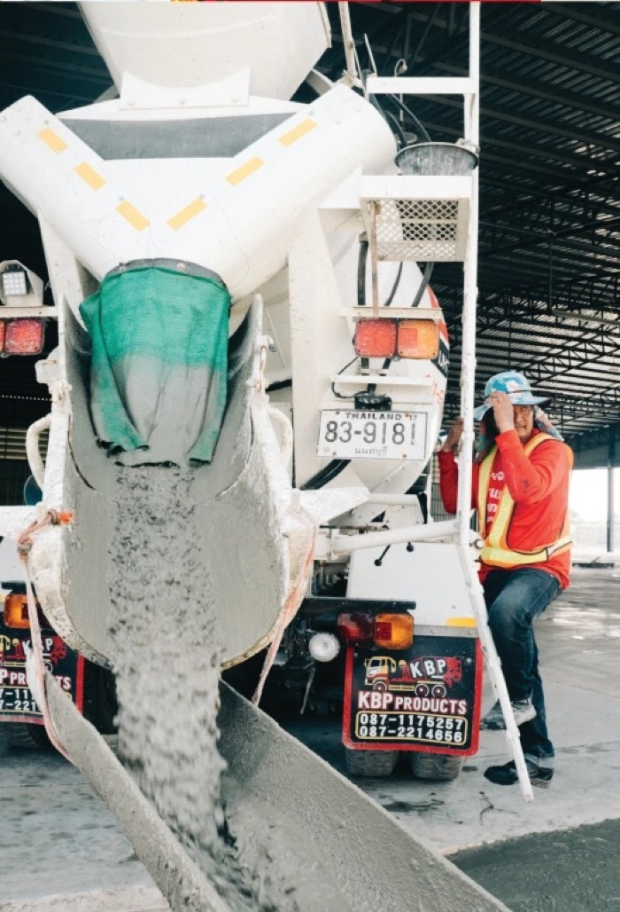

Standard
มาตรฐาน
ที่เข้มงวดทุกขั้นตอน ตั้งแต่กระบวนการคัดเลือกวัตถุดิบ ควบคุมคุณภาพการผลิต ไปจนถึงหน้างาน

โรงงานคอนกรีตผสมเสร็จที่บางบัวทอง ใช้ปูนซีเมนต์เอสซีจี มีห้องแล็บทดสอบอยู่ในโรงงาน และบันทึกผลไว้ทุกคิวก่อนถึงหน้างานของคุณ
มหาแกร่งคอนกรีตก่อตั้งขึ้นในปี 2557 จากความตั้งใจของทีมงานทุกคนที่เชื่ออย่างนั้น เรามีโรงงานเดียวที่บางบัวทอง — เล็กพอที่คนผสมคอนกรีตให้คุณคือคนที่คุณโทรถามได้โดยตรง และพร้อมพอที่จะพิสูจน์ทุกคิวที่ส่งออกไป
CONCRETE ISN’T JUST MATERIAL — IT’S BUILD ON TRUST


ระบบควบคุมการผลิตของเราได้รับการออกแบบให้มีความแม่นยำสูง ทุกคิวผลิตสามารถตรวจสอบได้ ด้วยการบันทึกข้อมูลอย่างใกล้ชิด และการประเมินผลโดยทีมผู้เชี่ยวชาญ
ที่เข้มงวดทุกขั้นตอน ตั้งแต่กระบวนการคัดเลือกวัตถุดิบ ควบคุมคุณภาพการผลิต ไปจนถึงหน้างาน

ที่พัฒนาอย่างต่อเนื่อง ผสานความรู้ทั้งในและต่างประเทศ เพื่อคิดค้นคอนกรีตที่ตอบโจทย์จริงในทุกโครงการ

ที่พร้อมเข้าใจและตอบสนองทุกความต้องการของลูกค้า ด้วยความซื่อตรง ตรงต่อเวลา และความใส่ใจอย่างมืออาชีพ
นี่คืองานที่เราโหลดให้บ่อยที่สุด พร้อมข้อมูลที่เราต้องรู้เพื่อผสมให้ถูกงาน ส่วนกำลังอัดและค่ายุบตัว มาจากแบบหรือวิศวกรของโครงการ — เราผสมตามที่ระบุ ไม่เดาให้
9 รายการ
งานที่เราโหลดบ่อยที่สุด — พื้นบ้าน พื้นร้าน หรือพื้นต่อเติมที่วางบนดิน ตัวตัดสินมักเป็นทางเข้าหน้างาน ถ้ารถเข้าไม่ถึงแบบ บอกเราแต่เนิ่น ๆ เราจะวางแผนจุดเทให้

ฐานรากและตอม่อมักเทติดดิน และมักต้องแทรกคิวระหว่างงานอื่น ถ้าเหล็กแน่น คอนกรีตจะไหลลงแบบได้ไม่เหมือนกัน บอกเราว่าเหล็กถี่แค่ไหน

งานเสาและคานขึ้นอยู่กับความสูงของจุดเทและความต่อเนื่อง เสาที่ต้องเทรวดเดียวไม่ควรต้องรอรถ บอกลำดับการเทมา เราจะจัดระยะห่างของรถให้พอดี

งานโพสต์เทนชั่นต้องการให้พื้นถึงกำลังอัดสำหรับดึงลวดตามกำหนด ไม่ใช่ถึงเมื่อไรก็ได้ เราทดลองสูตรโพสต์เทนชั่นในแล็บของเราเอง และที่โรงงานมีสูตร MIX POST-TENSION 3 วัน ส่งแผนดึงลวดมา แล้วเราจะไล่ย้อนกลับมาให้

ทางเข้าบ้านที่พรุ่งนี้ต้องเอารถขึ้น งานซ่อมในอาคารที่ยังใช้งานอยู่ หรืองานเทกลางคืนที่เช้าต้องเปิดใช้ ที่โรงงานมีสูตร MIX FAST SETTING 1 วัน (24 ชั่วโมง) ไว้สำหรับงานแบบนี้โดยเฉพาะ

ถนนและลานจอดเป็นงานปริมาณมาก ที่จังหวะการส่งรถสำคัญกว่าอย่างอื่น เราวางระยะห่างของรถให้ทีมไม่ต้องรอ และแผงสุดท้ายไม่ทันแห้งก่อนถึงคิว

พื้นโรงงานถูกตัดสินที่ความเรียบและความทนการสึกหรอ ซึ่งเกิดขึ้นในชั่วโมงหลังจากเราออกจากไซต์ ค่ายุบตัวที่สม่ำเสมอทุกคิว คือสิ่งที่ทำให้ทีมขัดมันของคุณทำงานตามแผนได้

กำแพงที่กันดินหรืออยู่ติดน้ำ เป็นงานที่วัดกันที่ความทนทาน ไม่ใช่แค่กำลังอัด น้ำใต้ดินและริมคลองเป็นสภาพปกติของแถบนนทบุรี บอกเราว่ากำแพงต้องเจอกับอะไร

ฐานรั้ว บันได งานต่อเติมเล็ก ๆ หรืองานในซอยที่รถใหญ่เข้าไม่ได้ เรามีทั้งโม่ใหญ่และโม่เล็ก ซึ่งมักเป็นตัวตัดสินว่างานแบบนี้จะทำได้หรือไม่

ไม่มีรายการที่ตรงกับตัวกรองนี้ เลือก “ทั้งหมด” หรือโทรหาเราได้เลย — ถ้าเป็นงานที่ต้องใช้คอนกรีต เราน่าจะเคยส่งมาแล้ว
ดำเนินการด้วยเครื่องจักรที่ได้มาตรฐานอุตสาหกรรม ภายใต้การควบคุมดูแลที่ใส่ใจในรายละเอียด และบริหารจัดการอย่างเป็นระบบ เพื่อให้คิวสุดท้ายมีคุณภาพเท่ากับคิวแรก


01 — 06ทุกขั้นตอนเกิดขึ้นที่โรงงานเดียว ภายใต้ทีมเดียว
โรงงานขนาดนี้ไม่จำเป็นต้องมีห้องแล็บของตัวเอง แต่เรามี พร้อมเครื่องทดสอบกำลังอัดที่ได้มาตรฐานจากแบรนด์ชั้นนำระดับโลก และห้องปฏิบัติการที่รองรับการทดสอบ Slump, Cube และ Cylinder ในโรงงาน
4
การทดสอบที่ทำได้ในโรงงาน
Lab Test, Slump Test, Cube Test และ Cylinder Test — ทำที่นี่ ไม่ต้องส่งออกไปข้างนอก
28
วัน สำหรับผลลูกปูน
อายุมาตรฐานที่เราบ่มและกดทดสอบ และทดสอบที่อายุก่อนหน้าด้วยเมื่อแผนงานต้องการ
1
โรงงานเดียว ทีมเดียว
ผสม ทดสอบ และจ่ายงาน อยู่ในที่เดียวกันที่บางบัวทอง — มีคำถามเรื่องคิวไหน ถามที่เดียวจบ
ใส่ขนาดงานเข้าไป เครื่องมือจะคิดปริมาณให้ บวกเผื่อเสียตามที่คุณตั้ง และแสดงว่าต้องแบ่งกี่เที่ยว แล้วส่งตัวเลขนั้นมาให้เราได้เลย
ตัวอย่าง — พื้น 8 × 5 ม. หนา 12 ซม.
5.04M³
ผู้เชี่ยวชาญ วิศวกร และบุคลากรที่ทำงานด้วยความ “ซื่อตรง จริงใจ เป็นกันเอง” ทุ่มเทพร้อมเรียนรู้และเติบโตไปกับลูกค้า





โรงงานเดียวในนนทบุรี ไซโลปูนเอสซีจีสองใบ กองหินกองทราย หอผสม รถตัก ห้องแล็บ และรถโม่ ทั้งหมดอยู่ในลานเดียวกัน

BANG BUA THONG · NONTHABURI